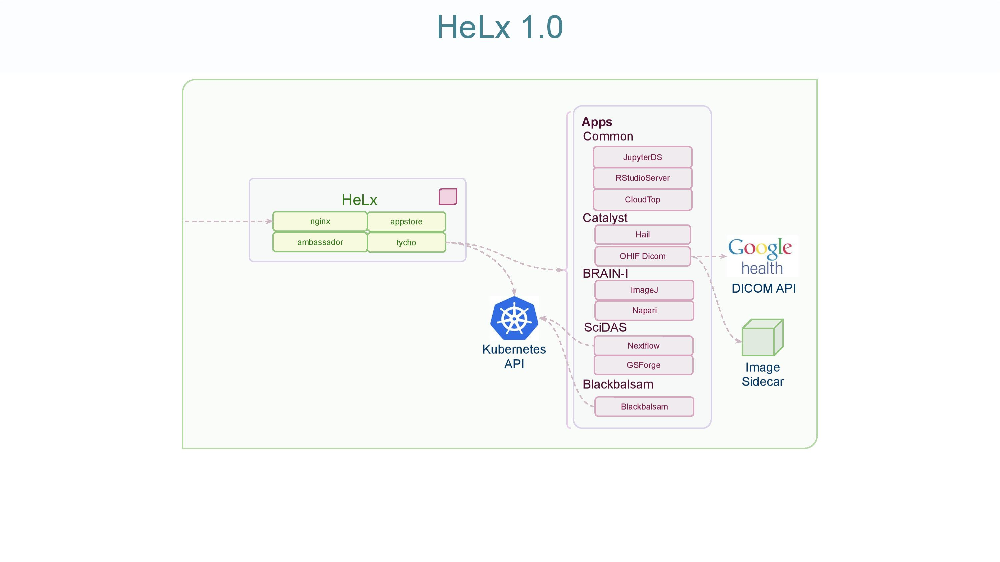

HeLx Documentation¶
- Release
1.0
- Date
Dec 09, 2020
Architecture¶
HeLx puts the most advanced analytical scientific models at investigator’s finger tips using equally advanced cloud native, container orchestrated, distributed computing systems. HeLx can be applied in many domains. Its ability to empower researchers to leverage advanced analytical tools without installation or other infrastructure concerns has broad reaching benefits.
BRAIN-I¶
BRAIN-I investigators create large images of brain tissue which are then visualized and analyzed using a variety of tools which, architecturally, are not web applications but traditional desktop environments. These include image viewers like ImageJ and Napari. Appstore presents these kinds of workspaces using CloudTop, a Linux desktop with screen sharing software and adapters for presenting that interface via a web browser. CloudTop allows us to create HeLx apps for ImageJ, Napari, and other visualization tools. These tools would be time consuming, complex, and error prone, for researchers to install and would still require them to acquire the data. With CloudTop, the system can be run colocated with the data with no installation required.
SciDAS¶
The Scientific Data Analysis at Scale project brings large scale computational workflow for research to cloud and on premise computing. Using the appstore, users are able to launch Nextflow API, a web based user interface to the Nextflow workflow engine. Through that interface and associated tools, they are able to stage data into the system through a variety of protocls, execute Nextflow workflows such as the GPU accelerated KINK workflow. Appstore and associated infrastructure has run KINK on the Google Kubernetes Engine and is being installed on the Nautilus Optiputer.
BioData Catalyst¶
NHLBI BioData Catalyst is a cloud-based platform providing tools, applications, and workflows in secure workspaces. The RENCI team participating in the program uses HeLx as a development environment for new applications. It is the first host for the team’s DICOM medical imaging viewer. The system is designed to operate over 11TB of images in the cloud. We have created versions using the OrthaNC DICOM server at the persistence layer as well as the Google Health Dicom API service. HeLx also serves as the proving ground for concepts and demonstrations contributed to the BDC Apps and Tools Working Group. For more information, see the BioData Catalyst website.
Blackbalsam¶
Blackbalsam is an open source data science environment with an initial focus on COVID-19 and North Carolina. It also serves as an experimental space for ideas and prototypes, some of which will graduate into the core of HeLx. For more information, see the blackbalsam documentation.
User Experience¶
Users browse tools of interest and launch those tools to explore and analyze available data. From the user’s perspective, HeLx will feel like an operating system since it runs useful tools. But there’s no installation, the data’s already present in the cloud with the computation, and analyses can be reproducibly shared with others on the platform.
Contact HeLx Help with questions.